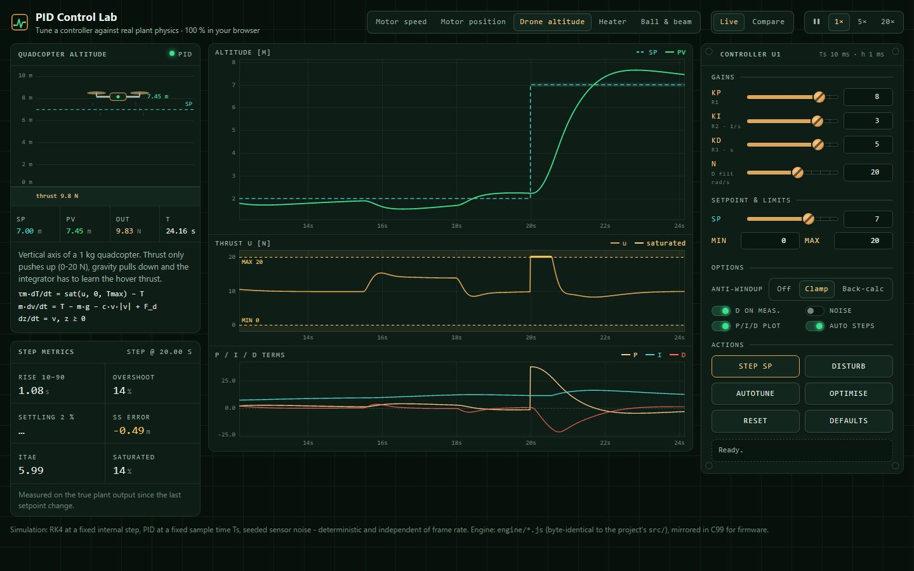
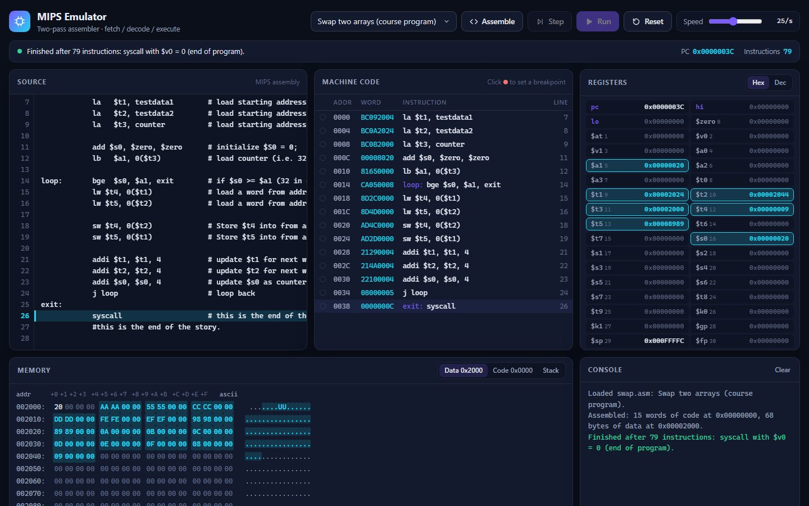
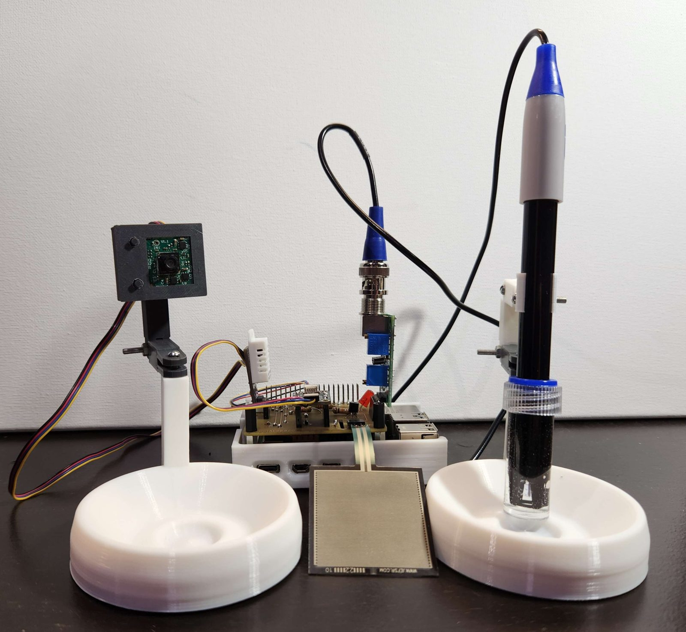

Languages
- C
- Python
- Java
- JavaScript
- SQL
- HTML
- CSS
Open to work · Toronto area · remote / on-site / hybrid
U1 · Software developer · Computer Engineering Technology grad
I build IoT devices
I'm looking for systems/backend, full-stack and ML/data roles. I build from the circuit board up: an HTTP server in C, a compiler and CPU emulator, a neural network from scratch, and real-time IoT dashboards, each with tests and a live demo.
Currently Data Migration Specialist at Boomerangfx
J1 About
I'm a Computer Engineering Technology graduate, and I'm happiest when a project crosses the line between hardware and software: wiring sensors to a Raspberry Pi, finishing a CPU emulator from my old lab code, writing an HTTP server in C, or training a neural network without any ML libraries.
I like projects where I get to learn something new, and I care about writing code that's clear, tested and easy for the next person to pick up.
J2 Skills
J3 Projects
01 · IoT & real-time · Live demo
The software my Raspberry Pi capstone was missing: calibration from raw sensor values to grams and pH, visit detection, alerts that don't false-alarm, history storage, and a live WebSocket dashboard. A demo mode runs right in the browser.
02 · Compilers · Live demo
A compiler for a small C-like language with a lexer, precedence-climbing parser, optimiser and MIPS code generator. Its output runs on my own MIPS emulator, so you can type C in the browser and step through the instructions it becomes.
03 · Machine learning · Live demo
No ML libraries: I wrote the matrix maths, backpropagation and the Adam optimiser myself, all gradient-checked. Trained on MNIST to 98.86% accuracy and shrunk to a 232 KB model, so you can draw a digit and watch the neurons light up.
04 · Systems programming
A multithreaded HTTP/1.1 server written from scratch in C, with a bounded work queue and back-pressure, keep-alive and pipelining, and path-traversal defences. I benchmarked it with my own load tester: ~9,900 requests/s and 0 errors across about a million requests.

Drag gates onto a board, wire them up and watch signals propagate. An event-driven simulator with gate delays, 0/1/X logic, reusable chips, truth tables and timing diagrams.
Case study & demo
Tune PID controllers live against five simulated physical systems, with relay autotuning. Includes an embedded C library verified against the simulation to within 0.0001.
Case study & demo
A two-pass assembler and step-through CPU with 50+ instructions, grown from my C lab series. It's also the target for my compiler.
Case study & demo
A static team mockup rebuilt as a real app: REST API, SQLite, hashed-password sessions, a searchable library and reorderable playlists.
Read the case study
A Raspberry Pi with four sensors on a custom PCB, reporting to Firebase and an Android app. I built the presence-detection sensor.
Read the case studyJ5 Earlier work & coursework
J4 Contact
I'm currently looking for new roles and interesting projects. Whether you have a question or just want to say hi, my inbox is open.
Say hello